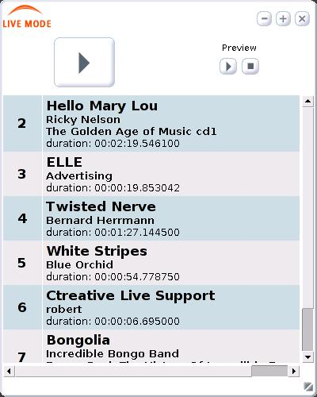
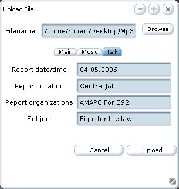
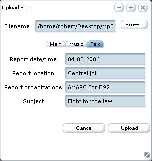
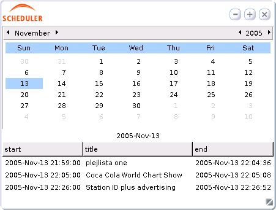
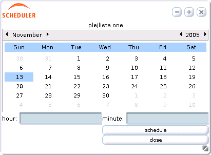

.2
Master Panel
.2
Master PanelLive Support Studio is the part of Campcaster that completely does the on air playback function inside a radio station's live studio but also includes all known automation elements.
LS Studio can be installed on the user’s machine placed inside the broadcast studio and connected with the audio mixing board that distributes an audio signal to the transmitter or live stream system. From there, the user can manage the content to be broadcast live on-air. Users also have the option of searching and browsing the audio library of the radio station or the system it belongs to - starting from general search criteria to the smallest search details.
Note: Campcaster Studio is not software for dynamic reduction equalization or audio signal post processing - it doesn’t make any major dynamic signal improvement.
If you want to edit and do additional processing of radio signals afterwards, we recommend (before any distribution of audio signal towards the transmitter) to use a known standalone dynamic reduction tool (dynamic compression, DeEsser, level maximizing) for pseudo acoustic improvements of the sound spectrum and listening impression.
Campcaster Studio is intended to be used on an independent playback machine that has two working modes:
Live Automatic mode - which broadcasts a radio program without studio crew with a system of permanent automation and outside programming
Live Assist mode - that does the live programming, and works as a live assistant machine. Users can manage the contents to be broadcast live on-air. In addition, by searching and browsing the audio archive on the LS Storage component, the user can line up and set files and playlists to be ready for broadcast.
Live Support Studio, whether in Automatic or Live Assist mode, has almost the same appearance.
In Live Automatic mode, a radio program is broadcast without studio personnel. Files in playlists in this mode are snapped together automatically one after another (clean snap), together with all user-predefined functions and settings determined in the playlist editor.
Basically, the broadcast process looks like this: song – mix - next song.
Note: Live Automatic mode is currently the only mode LS Studio has. Changes take place frequently, so check the Campcaster homepage at http://campcaster.campware.org often.
Live Assist mode can be considered as a live jingle machine with the function of adding audio material by users, whether they are program moderators, audio technicians, announcers, DJs or MCs (depending on your radio station’s orientation).
As a live jingle machine, Live Assist mode broadcasts audio files one by one (song by song), according to the broadcast scheduler and previously-created playlists. After the audio file is played, the list stops, waiting for the user’s next start command.
So that the broadcast process looks like: song – stop – manual play - next song.
When starting the computer with Campcaster installed from the demo/install CD - you will find the LS Studio icon on the desktop.
After starting the Campcaster application on your studio machine, the Master Panel will appear, allowing you to login into the system and giving you essential information about the station time and logo as well as what is currently in the program.
.2
Master Panel
When starting Campcaster Studio, the Master Panel appears in the upper part of the screen, remaining on the screen as your friendly assistant the whole time you work on your computer.
No matter in what mode of LS Studio you are working in, the Master Panel displays:
time field - displaying the time at your radio station
play/pause button - with the function of playing/pausing the item directly on air
stop button - with the function of stopping the item directly in the on-air program
Now Playing field – displaying the name of the file that is in the broadcast, together with the additional information such as elapsed time and remaining time of the audio file.
Next Playing field - displays the next file in line for broadcast, also with additional information about length and the exact starting time of the file, with already calculated mix time between audio slots
VU meter field - for measuring the audio signal level in program (as a standard). This is the first indicator showing the user if something is wrong with the sound, if there are system blocking errors, if audio file plays with no sound…
Note: The content of the Next Playing and VU meter fields is currently neither available nor visible. This is only a short description what these fields will indicate in an upcoming version of Campcaster.
logo of your radio station - this can be set from a separate administration panel
‘log in’ button - you need to click 'log in' if you want to enter the Live Support Studio environment. When you are logged in, the button changes to ‘log out’;
Exit button, which you need to click if you want to exit the whole application. The popup window will then appear asking you to confirm if you are sure in this action.
1.3 Login/Logout

Clicking the ‘log in’ button on the Master Panel, you get to the login palette, which displays the following :
Login field - where you need to enter your personal user name assigned to you by your system administrator (the default user name is root)
Password field - where you enter your password as assigned by your system administrator (the default password is q)
The Language drop-down menu – where you can select one of the available user interface localizations of Campcaster Studio from the list. The default language is English, but you can use one of the other localized versions we supply.
The selected language will last as long as you are logged into the LS Studio application. When you log out and then log in for a second time, you won’t have to choose the interface language again, as it will be remembered. You will only need to choose the language again if you quit LS Studio completely and start the program again.
Cancel and OK buttons - which allow you to confirm the login or cancel the operation.
After successfully presenting on the system and logging in into Campcaster Studio, you will be able to see the following:
The Master Panel - with basic information of your radio station (time and logo), the track currently being played out by the scheduler and play/stop functions of the audio slot.
The Navigation Menu – buttons for all the main functions you need for operating Campcaster Studio, depending on your user rights and permissions (previously determined by administrator)
Recommendation:
We recommend that you, as an user, logout after every session, when finishing your part of the radio program. The reason for this is special settings and user rights that are connected only to you and nobody else.
If you are using Live mode after another user, you can simply logout your colleague and login yourself – in order to start the new session that logs you as an author with your personal specified rights and saved settings, and all audio files and playlists you left in the ScratchPad the last time.
1.4 Navigation Menu
The Navigation Menu contains all the main functions you need for operating Live Support Studio. It is located in the lower part of the Master Panel, and is visible there throughout the whole user’s session.
The Navigation Menu consists of the following functions:
Live Mode button – for quick change of your working mode during the broadcast
Upload file button - for uploading sound files into either the playlist or the ScratchPad
ScratchPad button – opens the palette containing all recent files and playlists uploaded and created by currently logged-in user
Playlists button – for creating and editing simple playlists (changing file place in the list, changing fades...)
Scheduler button – for playlist scheduling and reviewing of daily broadcast schedule
Search button – search and browse audio clips available in the Campcaster storage server using the search criteria you set
Live Mode

Clicking on the ‘Live Mode’ button in the Navigation Menu opens up a new palette on the screen below the Master Panel.
The Live Mode palette contains:
play button (large in size)– plays the selected files immediately, interrupting whatever is currently playing
preview (cue) buttons – play/pause and stop button – gives users the option of pre-listening to audio files before playing them on air.
Space under the preview and play buttons is set to contain the list of audio slots (playlists, single files…) created by the user .
When the Live mode palette opens, the space below the play and preview buttons is blank. User can create there the list of audio files (if he or she works in Live mode), that are going to be broadcasted by the determined order. Playlist cannot be saved in this palette, but from the other function palettes that user access on some other way.
Note: Live Mode currently works ‘automatically’ (files are played automatically one after another). An upcoming version will also include working as ‘live assistant’ (that means that user plays one song after another).
The list of files in Live Mode represents your temporary playlist that will be broadcast either song by song or automatically, depending on how you set it.
Inserted audio files display as rows, one after another. Each row contains:
each file's number in the playout order (a file in the master panel is always #1)
the file's title, its creator, and duration
Right-clicking your mouse on an audio file inserted into Live Mode will bring up a context menu offering you the following options:
Preview (has the same role as the preview buttons in the upper part of the Live Mode palette, allowing the user to pre-listen to an audio file before playing it)
Move up (gives the user the option to move the file up in the live mode playback order)
Move down (gives the user the option to move the file down in the live mode playback order )
Remove (gives the user the option to remove a file from the live mode list)
Play (has the same function as the play button above the list. When the 'play' option is selected, the already-scheduled playlist in the Master Panel's 'Now Playing' window automatically interrupts and plays the selected file from Live mode)
Note: A playlist is the physical list of audio files that will be broadcast in the order the user determines. A created playlist, when saved in the system, appears as a single file and not as the whole list. When playing, a playlist will appear as a single audio file with the total duration of its parts.

Creating mini-playlists is usually very important and highly recommendable. In practice, the sales department can create a playlist of commercials that lasts from 2-4 minutes and contains up to 10 short audio commercial spots. These mini-playlists are saved in the system as advertising blocks and have a pre-determined time for broadcast.
The program creator than can simply upload the complete advert playlist from the sales department, instead of inserting ads file by file.
 

The 'upload file' option allows you to upload files from your local computer, Campcaster server or any other available source into the system. It then appears in the ScratchPad.
Browsing the audio archive or any other source or disc, user can find the audio file they wanted, add or edit its metadata information (the descriptions that help others to find the file) and upload it to the ScratchPad, where the uploaded file becomes the topmost item in the ScratchPad list.
The 'upload file' palette consists of the following elements:
Browse button – gives you the option of browsing all available sources from your local computer and LS server and selecting the desired file
File name tab - where the selected file path will appear
Main, Music and Talk tabs – where metadata information (such as the information stored in an MP3 file's ID3 tags) can be added or edited.
The Main tab is the default active tab which stores basic metadata for any sound file. Main tab contains the following metadata fields:
Title (lets you specify the title of the clip)
Creator (lets you specify the author of the clip)
Genre (lets you specify the genre of the clip)
Description (lets you create a short description for the audioclip)
Duration (is automatically detected and cannot be altered)
Note: If an MP3 file is uploaded, Campcaster will automatically use the information stored in its ID3 tags, if there is any.
The Music tab allows you to view, add and store metadata that is specific to music files. A large number of description fields available for users to input, such as: Album, Year, BPM, Rating, Mood, and so on.
The Talk tab allows you to specify metadata that is relevant for voice recordings (e.g. news reports, interviews, soundbites, etc.). It allows reporters to input time and date of the reported voice file is about (which is likely to be different than the time it is uploaded), the location of the item being covered and the organization being covered, as well as to input short info about its content and theme.
Cancel button – cancels the whole operation and exits the palette
Upload button – which you need to click to upload the selected file and complete the uploading process
Once you finish with uploading and creating the file's metadata, the selected file will be transferred to the ScratchPad (you can see that it appears at the top of the ScratchPad list).

As in Campcaster Station, the ScratchPad represents your workspace during your entire session. It can be used for loading all the materials (audio files, playlists…) you find necessary for creating your program. The ScratchPad also displays a list of all files you have worked with recently, and could be described as a cross between a web browser's history window and the clipboard.
Clicking on the ScratchPad button on the Navigation menu opens the ScratchPad palette. It consists of the following elements:
Preview buttons – play/pause and stop button - gives you the option of pre-listening and quick-checking audio files before using them in Live Mode or a playlist.
The Type column – contains icons indicating the type of item you are working with. An icon's appearance is the same as in Campcaster Station – audioclips are marked with a green note, playlists with a red note, and webstreams with a blue transmission symbol.
The Title column – displays the title of the items (audioclips, playlists, webstreams)
Add to playlist button - allows you to insert the selected file into a playlist by opening the Playlist palette and placing the selected file into it.
Clear list button – deletes all items from the ScratchPad
Remove item(s) button – deletes one or more files from the ScratchPad
In order to perform operations with individual files, you can click the right mouse button on an individual item in the ScratchPad. A popup menu will appear, offering you the following options (referring to the audioclips and playlists):
Add to Playlist ( where you can add the selected item into a new playlist)
Move up (lets you move the file up in the ScratchPad list)
Move down (lets you move the file down in the ScratchPad list)
Remove (gives you the option of removing the file from the ScratchPad list)
Preview (for pre-listening and quick-checking audio clips in the ScratchPad)
Add to Live Mode (for adding the selected file into the Live Mode list, waiting for the user's command to be played, or to be played automatically)
The ScratchPad has additional options for playlists only. If you right-click on a playlist, additional actions offered will include:
Edit playlist (redirects you to the simple playlist editor in the Playlist palette, for adding or removing files from the playlists, additional playlist editing, changing transitions or file order)
Schedule (redirects you to the Scheduler palette, for scheduling and programming the whole playlist by selecting the exact date and time for its broadcast)

Playlists can be edited and created in the Playlists palette, which, at the same time, works as a simple playlist editor.
This function allows you to execute various operations such as:
Creating a new playlist ,
Adding and removing files from the ScratchPad to a playlist, which may includes adding playlists inside playlists (such as commercial breaks or mini playlists inside a larger show)
Editing – simple edit functions, such as changing file order, changing transitions and other features
You can add a file (sound file or playlist file) from the ScratchPad to the active or new empty playlist by:
right- clicking on the item (either a sound file or playlist) in the ScratchPad and
selecting Add to playlist.
You can also edit the existing playlist in the Playlists palette by:
right-clicking on the playlist in the ScratchPad and
selecting Edit from the popup menu
The Playlists palette will then appear, displaying:
The Name field in the upper part of the palette, where you have to enter the title of your playlist
The first column on the left displays the start time of the playlist, file by file, starting from zero. Start time for the next item is calculated automatically.
The Title column displays names of the files, playlists or streams.
The Length column lists the duration of each item
The Fade in and Fade out column displays the increasing/decreasing curve transition value during the item's enter/exit, from zero to full level (for fade in) and from full level to zero (for fade out). The transition value for fade in or fade out is measured in milliseconds (1/1000 of a second), and the default transition is set to zero.
Under the table there is a checkbox , offering you the option to lock a fade out to follow the previous fade in, so that there is a mix between items – like a crossfade.
Note: As of version 1.0.2, fade in and fade out options are currently unavailable, as well as the checkbox field.
If there are no items entered in the playlist, the space below the Name field remains blank.
The Save button enables you to save all your changes and your work.
The saved playlist will now be visible in the ScratchPad, and the text in the lower left part of the palette will inform you that your playlist have been saved. This includes saving all actions (moving files, adding or removing, changing fades) that will be visible in the playlist the next time you open it.
The close button will close the current playlist, cancel the whole operation and exit the Playlists palette. Before exiting, popup window will appear offering you to previously save the playlist.
Right-clicking on the items in the playlist gives you additional options for playlist editing:
Move Up – lets you move the file up in the opened playlist and change its file order
Move Down – lets you move the file down in the opened playlist
Remove – lets you remove a file from the playlist. The file still remains in the system, however.)
1.9 Scheduler

The Scheduler palette allows you to automate (schedule) your playlist for broadcast at a predefined date and time.
Clicking on the Scheduler button in the Navigation menu opens up a palette similar to the Scheduler Navigator from Campcaster Station. The palette appears as a monthly calendar and contains the following elements:
Monthly calendar, with selected date marked in blue. Above the calendar is a row where you can select the month and year you want to review. Changes will then alter the calendar below according to the selected month and year.
A table displaying precisely scheduled playlists (‘to the second’) on the selected date from the calendar.
The first column displays the exact date and time for the playlist start
The second column displays the title of the playlist
The third column displays the exact date and time for the playlist end
After you have created and edited a playlist in the Playlists palette, it will be available in the ScratchPad and can be added to the Scheduler by:
right- clicking on the saved playlist in the ScratchPad and
selecting Schedule option from the popup menu.
That action opens a new Schedule palette, similar to the previous one, allowing you to determine the exact date and time for the selected playlist to start and to enter it into the scheduler table. The default date will be your current date. Besides the monthly calendar, this Schedule palette contains:
hour and minute field – where you have the option to enter the exact time for the selected playlist to start, consistent with existing scheduled playlists.
Schedule button - accepts all entered information for scheduling date and time. Clicking on the Schedule button automatically closes the palette and enters the playlist into the scheduler at the specified date and time. You can now see it’s title, start and end time, in the table under the calendar with already scheduled playlists.
Close button closes the palette and cancels the whole operation
You can remove a playlist from the Scheduler by right clicking on a scheduled playlist in the table and selecting Delete. This removes the playlist from the Scheduler , but does not remove it completely from the system. The playlist and the items inside it stays in the ScratchPad for the next use.
The search palette allows you to search (on either a simple or advanced level) and browse the archive of available files in Campcaster's storage server, in order to use them for creating playlists, scheduling or creating Live Mode lists. You can start looking for audioclips not only by title, but also by general searching metadata criteria down even to the smallest search details.
The main part of the Search palette are tabs that gives you the option to choose what type of searching and browsing you want to use:
Search - that works as a simple search engine
Advanced Search – lets you set multiple criteria for searching
Browse
All functions allow you to search for sound files as well as playlists and webstreams.

The Search (simple search) option works as a basic simple search engine. The user types a keyword into the search field, and then presses the Search button.
In the simple search option, the search process is based on keywords that you enter, and can represent complete words, phrases, or only a part. Keywords must refer to the information stored in either the title or creator fields; these are the only metadata criteria enabled in the simple search mode.
 .10.2
Advanced Search
.10.2
Advanced Search
Advanced Search also works as a regular search engine. As in simple search mode, you can search the metadata that you and other Campcaster users have input during the upload process. The main difference is that Advanced Search allows you to select as much metadata criteria as you find relevant to make your search successful. All the search results will appear at the bottom of the search palette.
The Advanced Search tab contains the following elements:
Search field with three types of criteria in one row;
The left pulldown menu allows you to select one metadata criterium you find relevant for the search. You can choose any metadata that Campcaster offers and users have input to describe audio content (title, genre, length, album, mood, bitrate).
The middle pulldown menu enables you to refine your search by selecting whether the word you enter will represent a value exactly equal to the metadata value (title, composer, etc.), a part of the metadata value, or the beginning of the metadata value.
In the third blank field, you should enter the keyword you are searching for.
The + sign located on the right allows you to add extra sets of criteria by clicking on the + sign located on the right of the search terms. You can add as many rows you need to refine your search. Clicking on the X sign removes a row.
By selecting more categories in the pulldown menu, and adding additional search rows, you can set your search process to be more precise and narrow your search results.
Clicking on the Search button starts the searching process.

Like in Campcaster Station, the Browse function in Campcaster Studio allows you to browse all files from the server according to general criteria you specify. In order to narrow search results as much as possible, the browse function gives you the opportunity to choose between similar files that are in the same subcategory.
The browsing process is divided into three columns with the same list of offered criteria.
The pulldown menu in the first column lets you choose the metadata category to browse from. You can choose any metadata that users have input to describe the files.
Under that category, the pulldown menu of the second column allows you to choose one of the options that appear in the chosen category, which refines the number of displayed files.
The third column works the same way and lets you continue refining and narrowing your results by entering first the category, and then selecting the option or an item displayed in the field below.
Note: It is in your best interest to choose as many categories as you need, in order to refine and narrow search results and to find the file quickly among the thousands of files in the server.
Whether you choose simple Search, Advanced search or Browse option, the search results will appear at the bottom of the palette in the table containing Type, Title, Creator and Length of the resulting file.
By right clicking on an item (audio file, playlist or a webstream) in the search result table, a menu appears offering operations:
Add to ScratchPad
Add to Live Mode
You can visit Campcaster's discussion forums online at http://campcaster.campware.org. There you will also find program updates and other useful information.
Campcaster needs your input to constantly improve. If the software doesn't behave as it should, please let us know about it by entering a trouble ticket at http://trac.campware.org/campcaster. That way, the Campcaster team can keep track of your problem and you can check to see whether it has been fixed.